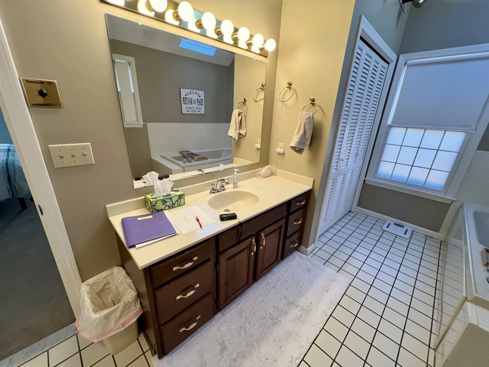
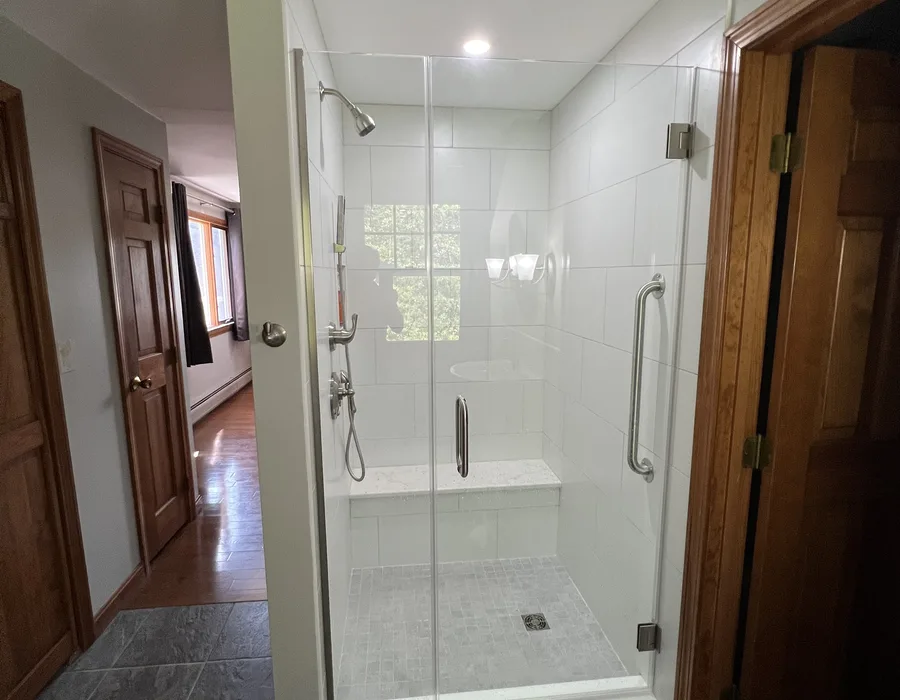
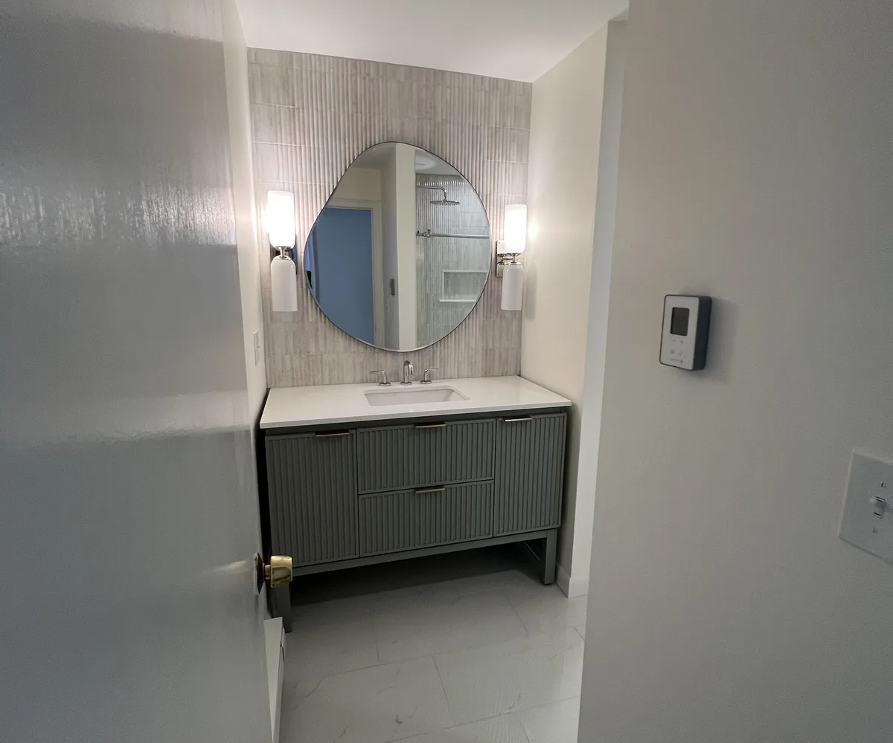

Wenham Bathroom Remodel Contractors
Bathroom remodeler in Wenham MA for quiet homes, careful details and stronger daily function
A Wenham bathroom remodel should improve comfort and reliability while preserving the calm, finished feel homeowners expect from the rest of the home.
Our work
A real DeFaria bathroom transformation
Watch a bathroom we remodeled, from the first step to the final detail.
Get a Free Estimate
Local search focus
Wenham homeowners need subtle upgrades that still perform every day
Wenham homeowners may not want a bathroom that shouts for attention. They often want a room that feels cleaner, more practical and better built without disrupting the character of the house.
DeFaria Construction starts by clarifying the hidden work, the finish goals and the way the room needs to support everyday routines.
- Bathroom remodel planning for 01984 homes where quiet finish coordination matters.
- Ventilation, shower prep, vanity scale and lighting discussed before the design is locked.
- A direct estimate path for homeowners who want improvement without overbuilding the room.
City-specific planning
Wenham bathroom projects need subtle finish coordination
Wenham Center, Larch Row and the Hamilton-Wenham area can bring homes where proportion, trim, lighting and material restraint matter.
That makes the estimate different from a generic bathroom pitch. Waterproofing, ventilation, tile layout, vanity scale and floor transitions should be planned so the finished room feels integrated, not forced.
- Keep finish choices quiet, durable and connected to the home.
- Review ventilation and shower prep before materials.
- Plan vanity scale, lighting and trim transitions together.
- Use a direct estimate path instead of a generic sales pitch.
Estimate drivers
What a Wenham homeowner should know before choosing finishes
The most important decisions may not be visible in the inspiration photo. Wall condition, fan route, shower preparation, rough-in access and floor level can decide how clean the final room feels.
DeFaria’s owner-led walkthrough gives the homeowner a clearer sense of what is possible, what needs caution and how the room can be improved without overbuilding the design.
A Wenham homeowner should see that a subtle bathroom upgrade still needs a serious plan behind the walls.
Project photos
Bathroom remodeling photos for Wenham homeowners
Wenham homeowners can use the project photos to check the finish standard while the page explains how subtle details are planned.



Areas covered
Bathroom renovations across Wenham neighborhoods and ZIP codes
DeFaria Construction serves Wenham bathroom remodeling in 01984, including Wenham Center, Larch Row, Pleasant Pond and Hamilton-Wenham area homes.
- Wenham Center
- Hamilton-Wenham area
- Larch Row corridor
- Pleasant Pond area
- 01984
Cost
How much does a bathroom remodel cost in Wenham, MA?
For a standard full bathroom remodel, most of the projects we price on the North Shore land between about $12,000 and $25,000. A larger primary bathroom or a high-end finish level usually runs $25,000 to $45,000 or more. The range depends far more on scope than on size: keeping the toilet, tub or shower in the same place costs much less than moving plumbing, and what is found behind the walls in an older house can change the number.
Plan a contingency on top of the figure you are comfortable with. In Wenham, where many homes are older and have been updated in stages over the years, opening a wall can reveal old supply lines, soft subfloor or framing that was cut by a previous plumber. Your real number comes from an owner-led walkthrough and a written, itemized estimate, so you can compare it line by line with any other quote.
Older homes
Remodeling a bathroom in an older Wenham home
Wenham has a lot of established houses, including antique colonials and homes that have been added onto over generations. Bathrooms in these houses were often fitted into whatever space was available, so walls may be out of plumb, floors may slope and the room may have been remodeled more than once already.
That is why we plan the structure before the finishes. We check the floor for level and deflection before tile goes down, look at how the existing plumbing runs, and plan where a properly vented exhaust fan can exit the house. In historic houses the goal is usually a bathroom that works like new and still feels like it belongs to the home, with trim, door styles and proportions that respect the rest of the house.
Waterproofing
Why waterproofing matters more than the tile you choose
Tile and grout are not waterproof. What keeps water out of the framing and away from the ceiling below is the layer underneath. Most failed bathrooms we are called to fix had tile installed over regular drywall, or a shower pan that was never sealed or sloped correctly. The result is loose tile, mold behind the wall and stains below.
A durable shower starts with a proper backer, a continuous waterproofing membrane over the walls, niche and bench, and a base sloped to the drain. Ventilation is part of the same plan: a fan sized for the room and ducted outside, not into the attic, protects every other dollar spent on the bathroom, especially through a Massachusetts winter.
Permits
Permits and inspections for a Wenham bathroom
Bathroom work that touches plumbing, electrical or framing needs permits, and in Massachusetts the plumbing and electrical permits are pulled by the licensed trades doing that work. In Wenham, building permits come through the town building department, and rough-in work is inspected before the walls are closed.
We coordinate the permits and inspections as part of the project, so the homeowner is not left scheduling inspectors. Unpermitted plumbing and electrical work can become a real problem when you sell, so a contractor who suggests skipping the permit is a warning sign, not a shortcut.
Layout ideas
Ideas that work well in Wenham bathrooms
- Walk-in showers in place of a tub that is rarely used, with a bench and a recessed niche.
- Floating vanities and recessed medicine cabinets that make a small bathroom feel larger.
- One continuous floor tile running into a low-curb shower, so the room reads as one space.
- Heated floors, which make a real difference in a New England winter.
- Solid blocking in the walls for future grab bars, added during framing at almost no cost.
If the house has only one full bathroom, we plan the sequence to keep a working toilet available as long as possible and tell you in advance when water has to be off.
A typical project moves in a clear order: protection and demolition, framing and floor repairs, plumbing and electrical rough-in with inspections, waterproofing and backer board, then tile, the vanity, fixtures, glass, paint and a final walkthrough. Choosing tile, the vanity and fixtures before demolition keeps the crew from waiting on materials in the middle of the job, and debris leaves the house the same day it comes out.
Hiring guide
Questions to ask any bathroom remodeler in Wenham
- Are you licensed and insured in Massachusetts, and will you show proof before work starts?
- What exactly is included in the price, and what is an allowance that can change?
- Which waterproofing system will you use in the shower?
- Who pulls the plumbing and electrical permits, and who is on site every day?
- How do you handle hidden damage found after demolition, and how is it priced?
Comparing quotes only works when they cover the same scope. A low number that leaves out waterproofing, subfloor repair or permits usually costs more by the end of the project. With DeFaria, the owner walks the project with you and the scope is written down before work begins.
Experience
Why this Wenham page is built for real homeowners, not just keywords
For Wenham, the page is about restraint and reliability. Luiz DeFaria’s walkthrough turns a quiet upgrade into a clear construction plan.
Wenham changes the page because restraint matters. The remodel should improve the room without overbuilding the look or ignoring daily function.
Call (617) 893-2221 for a free estimateFAQ
Common questions about bathroom remodeling in Wenham
What bathroom remodeling details matter in Wenham homes?
Wenham bathroom projects can include subtle finish coordination, ventilation, waterproofing, vanity scale, lighting, tile preparation and fixture planning.
Does DeFaria serve Wenham for bathroom remodeling?
Yes. DeFaria Construction serves Wenham and the 01984 ZIP code area for bathroom remodeling and renovations.
What makes a Wenham bathroom remodel different?
Many Wenham projects benefit from subtle finish coordination, careful trim transitions and planning that respects the home’s existing character.
Can the estimate cover both design and construction details?
Yes. DeFaria can discuss layout, waterproofing, ventilation, tile, fixtures, lighting and finish coordination during the walkthrough.